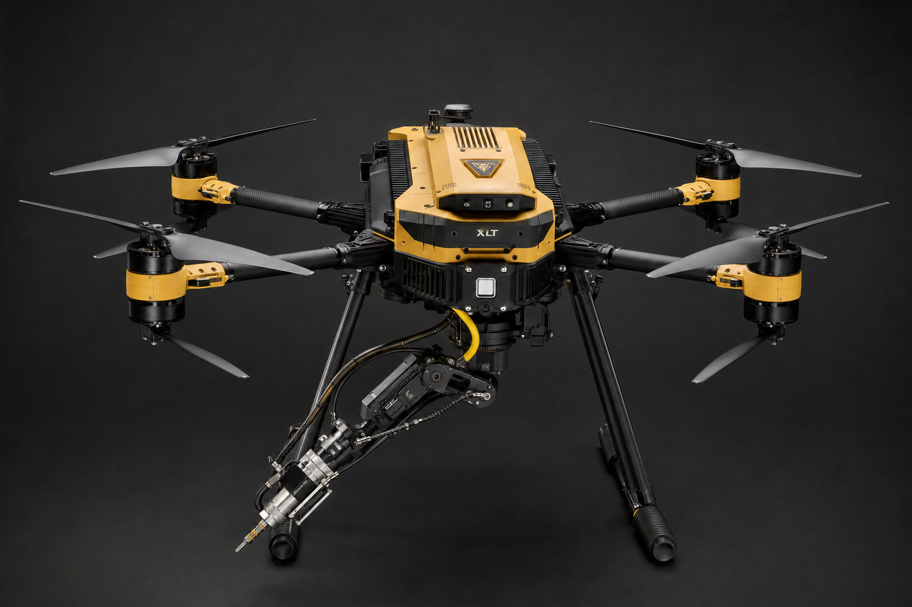

CLEAN. SAFE. REPEATABLE. Without leaving the ground.
Industrial-grade cleaning drones, operated by certified pilots across the Philippines. Glass curtain walls, solar arrays, stadium roofs, heritage stone — anything once cleaned from a rope.
Not just the glass. The entire building.
Most cleaning crews touch only the glazing they can reach from a cradle. Our drones clean every surface of the envelope — to the same standard, without a single worker leaving the ground.


The entirety of your building — not just the glazing — maintained to the same standard, without a single worker leaving the ground.
Built for the assets that define a skyline.
Rope and scaffolding cost more than money.
For a century, cleaning a tall building meant putting people over the edge. It is slow, it is expensive, and it carries a risk no owner should have to underwrite.
High liability
Rope access and scaffolding put workers at height, exposing owners to liability, insurance loading, and regulatory risk every single day a crew is on the wall.
Excessive cost
Scaffolding, cranes, boom lifts, and rope-access teams inflate budgets long before a single pane is touched — and the meter runs for the whole job.
Operational disruption
Scaffolding blocks entrances, closes lanes, and takes weeks to erect and strike. Your building runs at half capacity while it stands.
Purified water. Zero spotting.
Reverse-osmosis purified water generated on-site. No rinse pass needed, no streaking — even on glass and solar surfaces where ordinary tap water leaves mineral spotting.
The result is a finish that dries clear without a single touch from a squeegee or a worker dangling from a rope.
Calibrated pressure. Safe on everything.
30–60 PSI delivered through a soft-jet nozzle. Calibrated to be safe for glass, sealants, heritage stone, and photovoltaic surfaces alike.
Each surface type carries its own pressure profile, set during the survey and logged against every flight so the cleaning is always documented and repeatable.
RTK station-hold. Two centimetres.
The drone tracks a vertical line without drift, holding position to two centimetres even in 30 km/h gusts. RTK positioning keeps the spray pattern exactly where it belongs.
Every flight is logged automatically and delivered as a PDF — telemetry, coverage, water and chemical usage, and the recommended cleaning interval for the asset.
From brief to flight report, in five steps.
Every engagement runs the same disciplined path, whether it is a single facade or a nationwide portfolio. No hidden mobilisation fees, no surprises on flight day.
We reply to every brief within 24 hours, and the free aerial survey is included in every tier.
Site brief
Building photo, address, floor count, target surfaces. Reply within 24 hours.
Aerial survey
Free 30-min flyover. Hazard mapping. Airspace clearance check. Photo-documented.
Fixed quote
Per-floor or per-panel pricing. No hidden mob/demob. What you sign is what we bill.
Flight day
Three-crew operation: lead pilot, support pilot, ground safety. 60-min flight blocks.
Flight report
Before/after photo PDF + area, water, chemical usage, telemetry, recommended interval.
The same wall, two different centuries.
A typical building cleaned in a single week — versus weeks or months with traditional methods.
Cleared to fly. Insured to land.
Every flight runs inside a documented safety envelope — licensed crews, coordinated airspace, and fail-safes built for the dense urban skyline of Manila.
Licensed drone operators
Every aircraft is flown by a CAAP-certified remote pilot-in-command, with a support pilot and ground safety officer on every job.
Comprehensive insurance
Full public-liability and operations cover on every flight — so the wall is cleaned without loading the building's own policy.
Urban-safe fail-safes
Geofencing, no-fly buffers, ballistic parachutes, automatic land-on-fault, and blade guards — engineered for flight over occupied ground.
Regulatory compliance
We coordinate CAAP clearances and local permits ahead of every deployment, so the airspace is signed off before we arrive.

Send us a photo. We'll send a flight plan.
Reply within 24 hours. Free aerial survey included.
Begin a brief